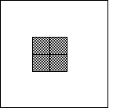
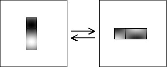
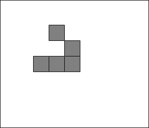

| Some patterns of live cells have easily predictable behavior under the Life rule. Here are three examples. |
| A block remains unchanged from generation to generation, unless something collides with it. |
|  |
| A blinker is a horizontal or vertical line of three cells, both sharing the same middle cell. The vertical line turns into the horizontal line, and these keep oscillating between one another. |
|  |
| More interesting is this little pattern of five live cells. It is called a glider because it glides off to the southeast. The three combinations of horizontal and vertical reflections of the glider give gliders that travel northeast, northwest, and southwest. |
|  |
| Click the picture for an animation. |
Return to Life.